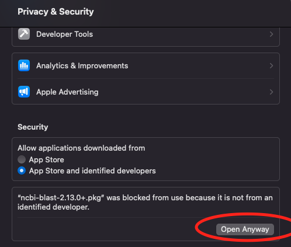
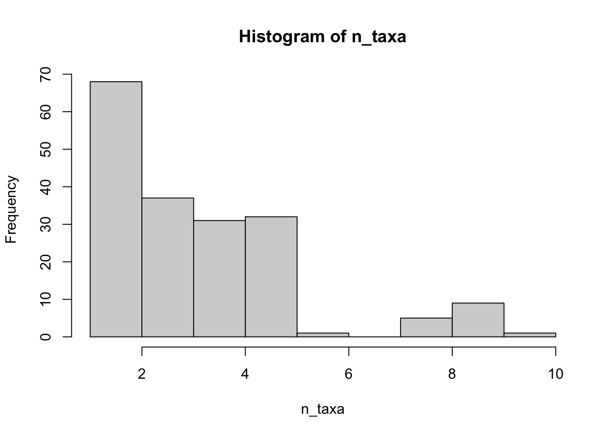
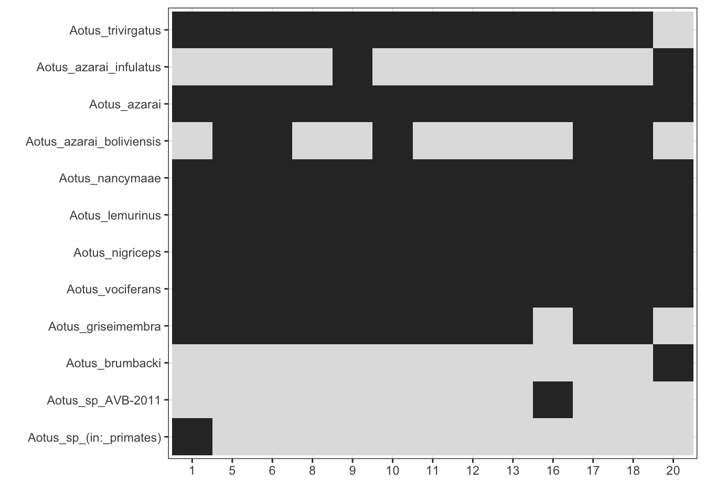
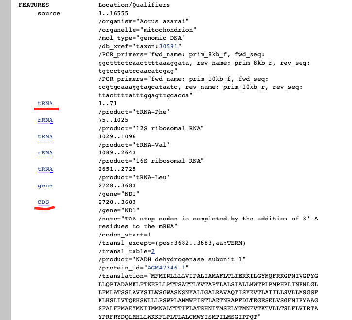

Chapter 14 Systematic Retrieval of orthologous DNA sequences form GenBank
14.1 Introduction
In the previous chapter, we introduced many public databases for genetic/genomic resources. However, it is often difficult to systematically retrieve representative sequences for the focal taxa with a good balance of the coverage of taxa and genes. We can, for example, use a gene name and a taxon group to download sequences, but often times, gene names differ, and sometimes mislabelled. These issues can be especially problematic for large-scale analyses where individual errors cannot be detected.
Today, we are going to introduce two tools to systematically select taxa and markers for a large-scale phylogenetic analyses. The first tool, phylotaR, is a pipeline that uses an alignment search tool to identify orthologous sequences without the need for gene name matching. For a given parental taxonomic group, the pipeline will search through available sequences hosted on GenBank and identify orthologous sequence clusters. A user is then able to survey the identified clusters and select the ones which best suit their phylogenetic analysis needs, e.g. by selecting the clusters that maximizee the number of taxonomic groups.
The second tool, AnnotationBustR, is a pipieline that extracts gene regions from complete genomes or long contigs with proper annotations, so that we are not limited to use individually sequenced genes, but also extract gene regions from complete genome sequencing resources.
14.2 Installing Tools
14.2.1 Windows
If you haven’t installed Rtools, you should install Rtools42 first. Follow the default folder of installing it onto C:\rtools42.
14.2.2 Mac
Install Xcode from the Mac App Store.
For Windows, Mac, Linux, we then need to install devtools, so we have the capability of building packages from codes directly.
install.packages("devtools")If prompted with “compiling from source directly”, click “Yes”.
Now you are ready to compile phylotaR from the source
remotes::install_github('ropensci/phylotaR')14.2.3 NCBI BLAST+ Tools
The PhyLoTa pipeline uses BLAST to identify orthologous sequence clusters. In order to run phylotaR, a local copy of the BLAST software must be installed on your computer. Installing the phylotaR package does not install BLAST, it must be installed separately. To install BLAST+, please see the NCBI website’s installation instructions.
14.2.3.1 Windows
Download the latest executable (.exe) or tar zip (win64.tar.gz) from https://ftp.ncbi.nlm.nih.gov/blast/executables/LATEST/. After downloading, you can choose where you’d like to install (.exe) or where you’d like to unzip (.tar.gz).
14.2.3.2 MacOS
Download the latest executable (.dmg) or tar zip (macosx.tar.gz) from https://ftp.ncbi.nlm.nih.gov/blast/executables/LATEST/. If install directly from .dmg, the directory will be /usr/local/ncbi/blast/bin/.
if install .dmg, we need to turn off the security check, go to system settings->privacy & security 
14.3 Using phylotaR
14.3.1 Pipeline
phylotaR runs the PhyLoTa pipeline in four automated stages: identify and retrieve taxonomic information on all descendent nodes of the taxonomic group of interest (taxise), download sequence data for every identified node (download), identify orthologous clusters using BLAST (cluster), and identify sister clusters for sets of clusters identified in the previous stage (cluster^2) After these stages are complete, phylotaR provides tools for exploring, identifying and exporting suitable clusters for subsequent analysis.
Flowchart of the phylotaR pipeline
14.3.2 Running
First we need to provide a list of species you are interested, or an NCBI taxonomic ID of a group (such as genus, family, order). We can find the taxon ID using the NCBI taxonomy home page. As an example, we will investigate all the available sequences of Night Monkeys genus, Aotus, with a taxon ID of 9504. We also need to provide a working directory for phylotaR to store files, and the directory to where the blast+ is installed.
library(phylotaR)
# working directory for phylotaR to save output
wd <- "~/Dropbox/teaching/bookdown-demo-main/lab17/phylotaR_Aotus"
# directory to ncbi blast+
ncbi_dr <- "/usr/local/ncbi/blast/bin/"
# this applies if installed directly from dmg on mac, it changes on windows or unzip tar
# windows: [folder where unzipped tar]/ncbi-blast-2.13.0+-x64-win64/ncbi-blast-2.13.0+/bin
txid <- 9504Attention: if your directory names contain spaces, you need to add backslash before the space. e.g., if your path to ncbi directory is “C:/Desktop/lab 16/ncbi-blast-2.13.0+/bin”, you need to write “C:/Desktop/lab 16/ncbi-blast-2.13.0+/bin”.
phylotaR::setup(wd = wd,txid=txid,ncbi_dr=ncbi_dr, v=T)After setting up the pipeline, it’s ready to run:
phylotaR::run(wd = wd)14.3.3 Restarting
The pipeline can be halted and restarted. The cache records all downloaded and generated data by the pipeline. If there is a system crash or the user wishes to halt the program, the pipeline can be restarted from the same point it stopped with the function restart(). Additionally, due to the potential random nature of the pipeline, a user may wish to re-run the pipeline from certain stages. This can be archieved by first using reset() followed by restart(). For example, in the code below a completed pipeline is reset to ‘cluster’ and then restarted. After running these commands, the pipeline will run as if it has only just completed the download stage. Note, all resets and restarts are recorded in the log.
reset(wd = wd, stage = 'cluster')
restart(wd = wd)14.3.4 Cluster (i.e., orthologous genes) selection
After a pipeline has completed, the identified clusters can be interrogated. We can generate a phylota object using read_phylota() but in the code below we will load a pre-existing phylota S4 object from the package data. For referencing slots within S4 objects, we use @ instead of $. The phylota object contains cluster, sequence and taxonomic information on all the clusters. It has 6 data slots: cids, sids, txids, txdct, sqs, clstrs, prnt_id and prnt_nm. Each of these slots can be accessed with @, see ?`Phylota-class` for more information. The phylotaR package has a range of functions for probing clusters in a phylota object. For example, if we want to know how many different taxonomic groups are represented by each cluster we can use get_ntaxa().
Aotus_clusters<-read_phylota(wd=wd)
print(Aotus_clusters)## [1] "Phylota Table (Aotus)\n- [184] clusters\n- [1945] sequences\n- [13] source taxa\n"n_taxa<-get_ntaxa(Aotus_clusters,cid=Aotus_clusters@cids)Let’s inspect the cluster coverage distribution:
total_taxa <- length(Aotus_clusters@txids)
total_taxa## [1] 13hist(n_taxa)
We see that out of 13 species, most of the clusters (genes) cover less than 6 species, only a handful cover more than 50% of the taxa. Therefore, we filter all the clusters that have less than 6 species by using drop_clstrs():
keep <- Aotus_clusters@cids[n_taxa > 6]
selected <- drop_clstrs(phylota = Aotus_clusters, cid = keep)
selectedStats <- summary(selected)
print(selectedStats)## ID Type Seed Parent N_taxa N_seqs Med_sql MAD
## 1 1 subtree DQ098863.1 9504 10 66 1140.0 0.8966920
## 2 5 subtree HM761925.1 9504 9 49 710.0 0.9581328
## 3 6 subtree HM763429.1 9504 9 49 339.0 0.8417867
## 4 7 subtree JQ933053.1 9504 9 48 582.5 0.6754071
## 5 8 subtree HM759641.1 9504 9 48 272.0 0.8482955
## 6 9 subtree KC761951.1 9504 9 47 649.0 0.9808119
## 7 10 subtree MT489103.1 9504 8 45 1138.0 0.9992970
## 8 11 subtree KC762127.1 9504 9 45 797.0 0.9619747
## 9 12 subtree KC761371.1 9504 9 45 584.0 0.9551948
## 10 13 subtree KC760228.1 9504 9 43 276.0 0.8748720
## 11 16 subtree EF658652.1 9504 9 41 647.0 0.9793822
## 12 17 subtree HM760775.1 9504 8 41 680.0 0.9590605
## 13 18 subtree MT488555.1 9504 8 41 842.0 1.0000000
## 14 19 subtree U38998.1 9504 8 40 618.0 0.4020846
## 15 20 subtree DQ321662.1 9504 8 36 549.0 0.7970658
## Definition Feature
## 1 aotus (0.1), cds (0.1) -
## 2 aotus (0.1), fbn1 (0.1) -
## 3 aotus (0.09), chrna1 (0.09) -
## 4 aotus (0.1), genomic (0.1) -
## 5 aotus (0.1), gene (0.1) -
## 6 aotus (0.1), genomic (0.1) -
## 7 gene (0.2), complete (0.1) -
## 8 aotus (0.1), genomic (0.1) -
## 9 aotus (0.1), genomic (0.1) -
## 10 aotus (0.1), genomic (0.1) -
## 11 aotus (0.09), cds (0.09) barcode (1)
## 12 aotus (0.1), gene (0.1) -
## 13 atp (0.1), f0 (0.1) -
## 14 gene (0.08), sequence (0.08) -
## 15 gene (0.09), mitochondrial (0.09) -This summary provides information on each cluster in the phylota object, such as median sequence length, MAD score (the mean alignment density, values closer to 1 indicate all the sequences are of a similar length), most common words in the sequence descriptions and feature names. We would like to further filter the clusters with a MAD score less than 0.75
keep <- keep[selectedStats$MAD>0.75]
selected <- drop_clstrs(phylota = Aotus_clusters, cid = keep)
selectedStats <- summary(selected)
print(selectedStats)## ID Type Seed Parent N_taxa N_seqs Med_sql MAD
## 1 1 subtree DQ098863.1 9504 10 66 1140 0.8966920
## 2 5 subtree HM761925.1 9504 9 49 710 0.9581328
## 3 6 subtree HM763429.1 9504 9 49 339 0.8417867
## 4 8 subtree HM759641.1 9504 9 48 272 0.8482955
## 5 9 subtree KC761951.1 9504 9 47 649 0.9808119
## 6 10 subtree MT489103.1 9504 8 45 1138 0.9992970
## 7 11 subtree KC762127.1 9504 9 45 797 0.9619747
## 8 12 subtree KC761371.1 9504 9 45 584 0.9551948
## 9 13 subtree KC760228.1 9504 9 43 276 0.8748720
## 10 16 subtree EF658652.1 9504 9 41 647 0.9793822
## 11 17 subtree HM760775.1 9504 8 41 680 0.9590605
## 12 18 subtree MT488555.1 9504 8 41 842 1.0000000
## 13 20 subtree DQ321662.1 9504 8 36 549 0.7970658
## Definition Feature
## 1 aotus (0.1), cds (0.1) -
## 2 aotus (0.1), fbn1 (0.1) -
## 3 aotus (0.09), chrna1 (0.09) -
## 4 aotus (0.1), gene (0.1) -
## 5 aotus (0.1), genomic (0.1) -
## 6 gene (0.2), complete (0.1) -
## 7 aotus (0.1), genomic (0.1) -
## 8 aotus (0.1), genomic (0.1) -
## 9 aotus (0.1), genomic (0.1) -
## 10 aotus (0.09), cds (0.09) barcode (1)
## 11 aotus (0.1), gene (0.1) -
## 12 atp (0.1), f0 (0.1) -
## 13 gene (0.09), mitochondrial (0.09) -Let’s select the second cluster ID in this table for further investigation. We can extract its cluster and sequences records in the following way.
cid <- selectedStats[2, 'ID']
# get the cluster record
cluster_record <- selected@clstrs[[cid]]
# use the seq. IDs to get the sequence records
seq_records <- selected@sqs[cluster_record@sids]
# extract a single record
seq_record <- seq_records[[seq_records@ids[[1]]]]
summary(seq_record)## SeqRec [ID: MT488778.1]seq_record@dfln## [1] "Aotus griseimembra voucher ALGM71 fibrillin 1 (FBN1) gene, 3' UTR"Inspect the actual sequence
seq <- rawToChar(seq_record@sq)
print(substr(x = seq, start = 1, stop = 80))## [1] "TGGGTGATAATCTGAAGATGAAAATCCAGATTTTGCTTCATTAATTCACCATCCAGAGACCAAATAATTAAAAGAAAAAC"We could further reduce the dataset by choose best sequence per species. By default, the function will choose the top ten sequences by first sorting by those with the fewest number of ambiguous sequences, then by latest upload, then by sequence length. We can then inspect the completeness of the data by plotting presence and absence of clusters.
# choose best sequence per species
reduced <- drop_by_rank(phylota = selected, rnk = 'species', n = 1)
# look up name for txids
scientific_names <- get_tx_slot(reduced, reduced@txids, slt_nm = 'scnm')
# clean the names
scientific_names <- gsub('\\.', '', scientific_names)
scientific_names <- gsub('\\s+', '_', scientific_names)
print(scientific_names)## 231953 1002694
## "Aotus_sp_(in:_primates)" "Aotus_sp_AVB-2011"
## 361674 292213
## "Aotus_brumbacki" "Aotus_griseimembra"
## 57176 57175
## "Aotus_vociferans" "Aotus_nigriceps"
## 43147 37293
## "Aotus_lemurinus" "Aotus_nancymaae"
## 280755 30591
## "Aotus_azarai_boliviensis" "Aotus_azarai"
## 867331 9505
## "Aotus_azarai_infulatus" "Aotus_trivirgatus"plot presence and absence of clusters:
p <- plot_phylota_pa(phylota = reduced, cids =reduced@cids, txids = reduced@txids,
txnms = scientific_names)
print(p)
Based on the presense absence table, you might want to remove certain taxa from the final written fasta file when you build your phylogenies. Here we write the sequences to individual fasta files, and then write the summary info to a table.
dir.create(paste0(wd,"/outfiles"))
outSummary <- data.frame(Species=character(), Cluster=character(), Accession_ID=character(),Sequence_Info=character())
k = 1
for (i in reduced@cids){
print(i)
tempSid <- reduced[[i]]@sids
write_sqs(phylota = reduced, sid = tempSid,
outfile = paste0(wd, "/outfiles/aotus_cl",i,".fasta"))
for (j in tempSid) {
tempSeq<-reduced@sqs[j]
outSummary[k,]<- c(scientific_names[reduced@txids==tempSeq@txids],
i,j,tempSeq@sqs[[1]]@dfln)
k <- k+1
}
}
write.csv(outSummary,paste0(wd, "/outfiles/aotus_phylotaR_summary.csv"),row.names = F)14.4 Exercise I
- Follow the instruction above, and upload a screenshot of the output fasta files, and upload the
aotus_phylotaR_summary.csvfile. - Use phylotaR and download genes for the taxa of your term project. In each step, explain how you selected the taxa ID/ID vectors (lists of species or genus or families, etc.); Out of the orthologous clusters, how you filtered the ones for final usage; upload a figure of the presence/absence matrix of the clusters for your included species; generate the output with fasta files and a summary file of records.
14.5 Using AnnotationBustR
14.5.1 Introduction
AnnotationBustR reads in sequences from GenBank and allows you to quickly extract specific parts and write them to FASTA files given a set of search terms. It is complementary to the first tool phylotaR in that phylotaR only works with short sequences containing one gene. Recently, there are more whole genomes available and extracting individual genes out of these long sequences can be tedious. We can use AnnotationBustR and extract gene regions based on their gene names from whole genome sequences. The package also provides lists of common barcoding genes for different group of species and their synonyms. Notice that the tool only extracts gene regions directly according to the annotation information, and since it doesn’t perform blast, it cannot detect incorrect annotation if present.
14.5.2 Install the tools
#install (if necessary) and load reutils
install.packages("rentez")
install.packages("AnnotationBustR")14.5.3 Specify search terms of genomes
We need to find all the complete genomes sequenced for night monkeys (Genus: Aotus). Let’s inspect the search terms on Entrez Sequences Help. We can specify the organisms we are interested in using [Organism] or [orgn], and require the entry title to include “complete genome”.
From the NCBI Taxonomy Database, we discovered that the genus name “Aotus” can refer to eudicots plants or night monkeys. Therefore, we need to restrict our searches in mammals or primates in ther [orgn] term in addition to “Aotus”.
We can test if the following search terms work on Genbank first before we use it in rentez directly:
mammals[orgn] AND aotus[orgn] AND complete genome[title] The search term returned 10 records of complete mitochondrial genomes. Let’s fetch the accession numbers using rentrez:
library(rentrez)
aotus.search<-entrez_search(db = "nucleotide", # this is the genbank nucleotide database)
term = "mammals[orgn] AND aotus[orgn] AND complete genome[title] AND 0001/01/01:2021/10/15[PDAT] ")
# from the search results, we are retrieveing genbank accession ID for each sequence
# we can also retrieve other data, e.g., sequences directly
# check Table 1 in https://www.ncbi.nlm.nih.gov/books/NBK25499/table/chapter4.T._valid_values_of__retmode_and/
accessions <- entrez_fetch(db = "nucleotide",id = aotus.search$ids,rettype='acc') # the returned accessions are one single string with "\n" as the line breaks
# we will separate the accessions into a vector of characters
accessions <- strsplit(accessions, "\n")[[1]]
# seqs accession starts with "NC_" is part of the refseq database
# we need to remove them
if (length(grep("NC_",accessions))>0){
accessions<-accessions[-grep("NC_",accessions)]
}14.5.4 Load Gene Search Terms of Interest
AnnotationBustR works by searching through the annotation features table for a locus of interest using search terms for it (i.e. possible synonyms it may be listed under). These search terms are formatted to have three columns:
Locus: The name of the locus and the name of the FASTA of the file for that locus to be written. It is important that you use names that will not confuse R, so don’t start these with numbers or include other characters like “.” or “-” that R uses for math.
Type: The type of sequence to search for. Can be one of
CDS(coding sequence),Intron,Exon,tRNA,rRNA,misc_RNA,D-Loop, ormisc_feature. For building phylogenies, we prioritize the usage ofCDS,Intron,Exonin this case.

- Name: A possible synonym that the locus could be listed under.
For extracting introns and exons, an additional fourth column is needed (which will be discussed in more detail later in the tutorial):
-IntronExonNumber: The number of the intron or exon to extract
An example dataframe could look like:
Locus Type Name
1 ATP8 CDS ATPase8
2 ATP6 CDS ATPase6Or if the genes you are extracting has introns and you’d like to extract exons only for a specific gene, you could specify:
Locus Type Name IntronExonNumber
1 trnK_Intron Intron trnK-UUU 1
2 trnK_Intron Intron tRNA-Lys 1
3 trnK_Exon2 Exon trnK-UUU 2
4 trnK_Exon2 Exon tRNA-Lys 2
5 matK CDS matK NA
6 matK CDS maturase NA
7 matK CDS mat NA
8 matK CDS maturase K NA
9 matK CDS MATK NA
10 matK CDS matk NAAnnotationBustR has pre-made data frames for extracting animal and plant mitochondrial DNA (mtDNA), chloroplast DNA (cpDNA), and ribosomal DNA (rDNA). We can load these databases first:
#Load in pre-made data frames of search terms
library(AnnotationBustR)
data(mtDNAterms)#loads the mitochondrial DNA search terms for metazoans
data(mtDNAtermsPlants)#loads the mitochondrial DNA search terms for plants
data(cpDNAterms)#loads the chloroplast DNA search terms
data(rDNAterms)#loads the ribosomal DNA search termsWe can subset these data.frames for specific markers we are interested in:
head(mtDNAterms)## Locus Type Name
## 1 tRNA_Phe tRNA tRNA-Phe
## 2 tRNA_Phe tRNA trnF-gaa
## 3 tRNA_Phe tRNA trnF GAA
## 4 rRNA_12S rRNA 12S ribosomal RNA
## 5 rRNA_12S rRNA s-rRNA
## 6 rRNA_12S rRNA small subunit ribosomal RNAsummary(mtDNAterms$Type)## CDS D-loop misc_feature rRNA tRNA
## 132 1 2 39 79Aotus.genes<-mtDNAterms[mtDNAterms$Type == "CDS",]
unique(Aotus.genes$Locus)## [1] ND1 ND2 COI COII ATP8 ATP6 COIII ND3 ND4L ND4 ND5 ND6
## [13] CYTB
## 36 Levels: ATP6 ATP8 COI COII COIII CYTB D_loop ND1 ND2 ND3 ND4 ND4L ... tRNA_Val14.5.5 Extract sequences with AnnotationBust
The main function for pulling out the sequence information is called AnnotationBust. We need to provide Accessions, Search terms for loci and some other arguments:
Duplicates and DuplicateInstances: if you would like to extract genes that have more than one copy in the genome, you need to specify the vector of the loci names (
Duplicates=c("tRNA-Leu")), and tell how many copies of the duplicate genes (e.g.,DuplicateInstances = 2) you’d wish to extract.DuplicateSpecies: whether you’d like to have multiple individuals per species.
Prefix: If a prefix is specified, all output FASTA files written will begin with the prefix. Default is NULL.
TidyAccession: Logical as to whether the accession table should have a single row per species. If numerous accessions for a species occur, they will be seperated by a comma in the accession table. Default=TRUE.
AnnotationBustR also has arguments to translate coding sequences into the corresponding peptide sequence setting the TranslateSeqs argument to TRUE. If TranslateSeqs=TRUE, users should also specify the GenBank translation code number corresponding to their sequences using the TranslateCode argument. A list of GenBank translaton codes for taxa is available here: https://www.ncbi.nlm.nih.gov/Taxonomy/Utils/wprintgc.cgi
# first set our output folder directory
wd<-"~/Dropbox/teaching/bookdown-demo-main/lab17/annotationBust-Aotus"
# creat this folder
dir.create(wd)
setwd(wd)
# run AnnotationBust function for extracting CDS without duplicated genes
# with no translation; but allow multiple individuals per species
Aotus.seqs<-AnnotationBust(Accessions=accessions, Terms=Aotus.genes,TranslateSeqs=F, DuplicateSpecies=TRUE, Prefix="Aotus", TidyAccessions=TRUE)
#We can return the accession table and write it to a CSV file.
Aotus.seqs#retutn the accession table
write.csv(Aotus.seqs, file="Aotus_AccessionTable.csv")#Write the accession table to a csv file14.6 Exercise II
Follow the instruction above, and upload a screenshot of the output fasta files, and upload the
Aotus_AccessionTable.csvfile. Compare the output summary fromphylotaRand inspect how many additional loci we got for which species.Use
AnnotationBustRto extract genes from whole genomes for the taxa of your term project. In each step, explain how you wrote the search terms and how many loci you got for which taxa.
14.7 Combine gene information from the two analyses
I wrote several functions in combine_analysis.R (BrightSpace->lab18), which can analyze the species and genes recovered from phylotaR and AnnotationBustR, merge the output, select the final list of species and genes, and write them into a user-defined folder for the following analyses.
setwd("~/Dropbox/teaching/bookdown-demo-main/lab17")
source("combine_analysis.R")## ── Attaching packages ─────────────────────────────────────── tidyverse 1.3.2 ──
## ✔ ggplot2 3.4.1 ✔ purrr 0.3.4
## ✔ tibble 3.2.0 ✔ dplyr 1.0.10
## ✔ tidyr 1.2.1 ✔ stringr 1.5.0
## ✔ readr 2.1.2 ✔ forcats 0.5.2
## ── Conflicts ────────────────────────────────────────── tidyverse_conflicts() ──
## ✖ dplyr::filter() masks stats::filter()
## ✖ dplyr::lag() masks stats::lag()Function generate_combined_list generates a merged list of genes and species by annotations of gene names. We just need to supply some input arguments for the previous analyses:
# The directory info will be different on your machine
# depending on where you stored your analyses
# directory of phylotar output folder with .fasta files
phylotaR_dir<-"~/Dropbox/teaching/bookdown-demo-main/lab17/phylotaR_Aotus/outfiles"
# prefix of phylotar fastas
phylotaFastaPrefix<-"aotus_cl"
# Name of the phylotar summary file
phylotarSummaryFilename<-"aotus_phylotaR_summary.csv"
# directory of annotationBust output folder with .fasta files
annotationBust_dir<-"~/Dropbox/teaching/bookdown-demo-main/lab17/annotationBust-Aotus"
# prefix of .fasta files
annotationBustFastaPrefix<-"Aotus_"
# data frame of the gene search terms used in AnnotationBustR
# notice that you might be using a different search term table
library(AnnotationBustR)
data(mtDNAterms)
annotationBustGeneSearchTerms<-mtDNAterms
# Name of the annotationBustR summary file
annotationBustSummaryFilename<-"Aotus_AccessionTable.csv"
# Output directory of the merged analyses
out_dir<-"~/Dropbox/teaching/bookdown-demo-main/lab17/combined"Let’s generate the merged list first
combined_list<-generate_combined_list(
phylotaR_dir,phylotarSummaryFilename,phylotaFastaPrefix,
annotationBust_dir,annotationBustSummaryFilename,annotationBustFastaPrefix,
annotationBustGeneSearchTerms)Next, let’s inspect the coverage of genes across the taxa
plot_sp_gene_pa(combined_list)We plan to remove all the species with less than six genes in total, and we also filter genes that have less than five species in total. (This is just an example filtering scheme, you should decide on the filtering schemes based on your research question)
final_list<-final_curated_genes(combined_list=combined_list,
out_dir=out_dir,
# change to your preferred output prefix
out_prefix="aotusCombined",
minGeneCoveragePerSp=6,minSpCoveragePerGene=5)Let’s inspect the gene/sp combination of the final matrix:
plot_sp_gene_pa(final_list)
ggsave(paste0(out_dir,"/final_Sp_Gene_matrix.pdf"),
height=length(unique(final_list$Species))*0.5,
width=length(unique(final_list$Locus))*0.5)In the output folder we set, we can see that each gene is saved as an .fasta, each sequence is named with the species name, and there is a summary file with the information for the included genes, species and sequence accession ID.